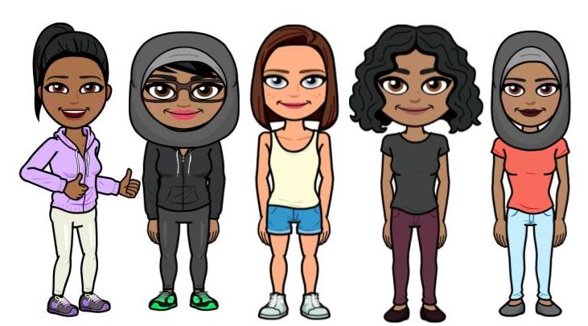
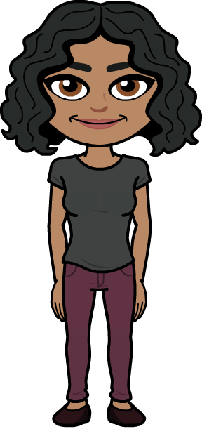
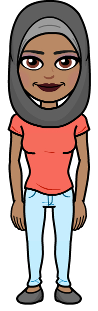
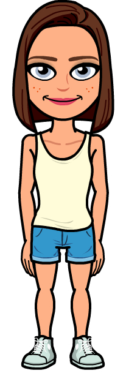
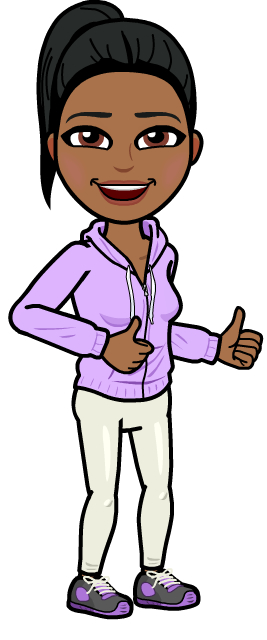

THE TEAM

Vania Comas

Hello guys! My name is Vania Comas, and I am a rising senior at Excelsior Preparatory High School in Springfield Gardens. I like to sing, write, and I have a growing passion for computer science. The main reason I participated in this project is because their are not a lot of women figures within the tech industry, and for younger girls to have role models of different races. One female figure that I personally look up to Michelle Obama. She was a first lady that didn’t just stand by her husband’s side but fought aside him as well. Michelle Obama created many charities or organizations that pertained to helping younger children or countries that faced poverty. As a fellow black girl I find it so inspirational to have someone to look up to like her. Every action she took was to better the country and the lives around her.
Shanjida Kamal

Hi! My name is Shanjida Kamal and I am a rising senior at Midwood High School in Brooklyn. I enjoy watching a variety of TV Shows and hanging out with my family and friends. I take pride in being an aunt and hope to one day be a role model or an inspiration for others. I enjoy computer science and learning new things has always been enjoyable for me. One of my role models is Patty Jenkins, an American film director that directed my favorite movie “Wonder Woman”. The film was very successful and very inspiring to women all around the world. I also admire Linda Sarsour, an activist has always stood up for what’s right and fought against injustice. I am excited for women to indulge in The Truth Behind Us and I hope that all our visitors will find someone to look up to.
Takia Mohinuddin

Hello, My name is Takia Mohinuddin. I am currently a rising senior at Leaders High School. I am hijabi who loves to read, sleep, and eat. Sadly I can’t make any money out of that therefore my true job resides in writing and coding. My female role model is Razia Sultan. For me she is pretty inspiring because she was born in an era where there was no difference in being a slave and being a women. Both of them were bonded to one person and thousands of norms, one mistake and you lose your life. However being a women, never stopped her from doing anything. She became the First and only muslim female ruler in India. As a muslim girl, reading about Razia was so inspirational because she never allowed anyone decide who she was and regardless of how many times she was looked down upon, she still rose to be one of the greatest rulers India has ever had.
Danielle Mullan

Hey, my name is Danielle Mullan and I’m currently a rising senior at Hunter College High School. I like to listen to music, watch movies, art, code, astronomy, socks, the outdoors, and dogs. I really look up to Ava DuVernay. She is a killer director and really invested in helping other women gain traction within the field, which I find very admirable. I also really admire Elizabeth Warren and all the work she has put into making America as inclusive as possible. Have fun looking at out site, thanks!
Annapurani Sivaraj

Hi there! My name is Annapurani Sivaraj and I’m a rising junior at the Middlesex County Academy for Science, Mathematics and Engineering Technologies. I am very passionate about computer science and business and hope to go into those fields at college. Some of my hobbies include volunteering, dancing, swimming, and participating in a world championship robotics team. One female role model who I look up to is Malala Yousafzai. She inspires me because at such a young age, she is an activist who is making an immense impact on female education. I hope to be as influential as her one day.